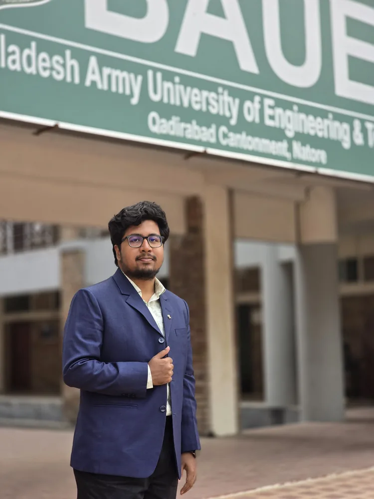

DEWANNAFIULISLAMNOOR

Code, research &
curiosity.
A portfolio that connects academic research, software building, cybersecurity practice and student leadership into one coherent CSE journey.
degree = "CSE"
research = ["AI", "CV", "HAR"]
builds = True
learns = "continuously"
def next_step():
return "make it useful"
I am Dewan Nafiul Islam Noor, a Computer Science and Engineering graduate and postgraduate student with a research focus on Artificial Intelligence, Machine Learning, Deep Learning, Computer Vision, Human Activity Recognition, video understanding and healthcare-oriented intelligent systems.
I completed my B.Sc. in Computer Science and Engineering from BAUET with a CGPA of 3.86/4.00 and I am currently pursuing an M.Sc. in CSE at RUET. My journey also includes software development, cybersecurity training and student leadership.
A research path that
keeps expanding.
From idea to
working system.
Published &
presented.
Technical
range.
Navigate like a
developer.
Try: help, research, projects, publications, experience, education.
Academic
foundation.
Beyond the
lab.
Recognition &
progress.
Frames from the
journey.
Let’s build
something meaningful.
Open to research collaboration, graduate opportunities and impactful AI/ML projects — especially around Human Activity Recognition, Computer Vision and Healthcare AI.